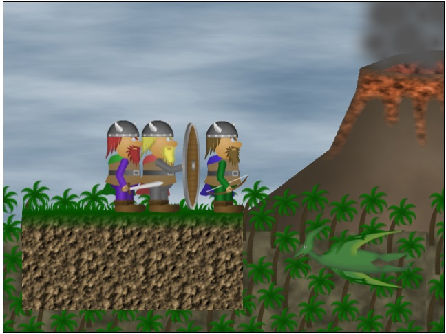

'20/08/01 21:53
Doom level loader
'19/11/19 06:06
NES Emulation Saga Part III
'19/11/19 06:06
NES Emulation Saga Part II
'19/11/19 06:06
NES Emulation Saga Part I
'19/10/31 02:37
🎮 Kori Yogan Mushi
'19/08/03 20:43
🎮 Bespoke Terror
'19/08/03 20:32
🎮 Conker's BFD for Nintendo 486
'19/07/23 22:18
🎮 TROG
'19/07/23 22:18
🎮 TTY Stacker
'19/07/23 22:18
🎮 Snake
'19/07/23 22:18
🎮 SM64 HTML5
'19/07/23 22:18
🎮 3D Ronaldo Football
'19/07/23 22:18
🎮 Batch Roguelike
'19/07/23 22:18
🎮 Prototype
'19/07/23 22:18
🎮 NEStest
'19/07/23 22:18
🎮 MegaMan in the blue mountains
'19/07/23 22:18
🎮 Rune Stacker
'19/07/23 22:18
🎮 Doktornix And The Fetch Quest
'19/07/23 22:18
🎮 Ludum Dare 29 Warmup
'19/07/23 22:18
🎮 Ground control to Major Tomashevsky
'19/07/23 22:18
🎮 Ludum Dare 23 Warmup
'19/07/23 22:18
🎮 Ludum Dare 23
'19/07/23 22:18
🎮 Keystone Kapers for NES
'19/07/23 22:18
🎮 GBMINE
'19/07/23 22:18
🎮 Choplifter
'19/07/23 22:18
🎮 6502 breakout
'19/07/23 22:18
🎮 Ali Baba and the 40 thieves
'19/07/23 22:18
🎮 1HGJ6
'19/07/23 22:18
🎮 1HGJ5
'19/07/23 22:18
🎮 1HGJ4
'19/07/23 22:18
🎮 1HGJ3
'19/07/23 22:18
🎮 1HGJ7

Title
Ye Lost Viking
Category
Games
Language
Javascript
Platform
HTML5
State
Finished
Started
April 18th 2014
Web
Play
Timelapse
YouTube
Unfinished The Lost Vikings inspired game, written while warming up for the 29th Ludum Dare competition.